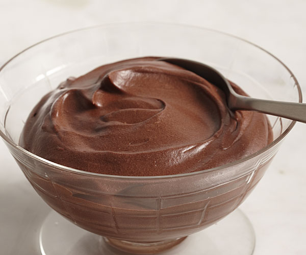

Chocolate Pudding

It's sweet. It's slimy. It's the perfect dessert—with or without teeth.
Ingredients
- 2 cups of whole milk
- 1 box of My-T-Fine Chocolate Pudding mix
Steps
- Pour 2 cups of milk in a pot
- Set pot on the stove and set the burner to MED
- Pour in chocolate pudding mix and stir mixture continually in milk
- Once mixture begins to bubble and congeal, lower burner heat to LOW/SIMMER and continue stirring until pudding has a thick texture
- Pour cooked pudding into single serve glasses, cover dishes with plastic/foil wrap, and place dishes in refrigerator to cool for 2-3 hours